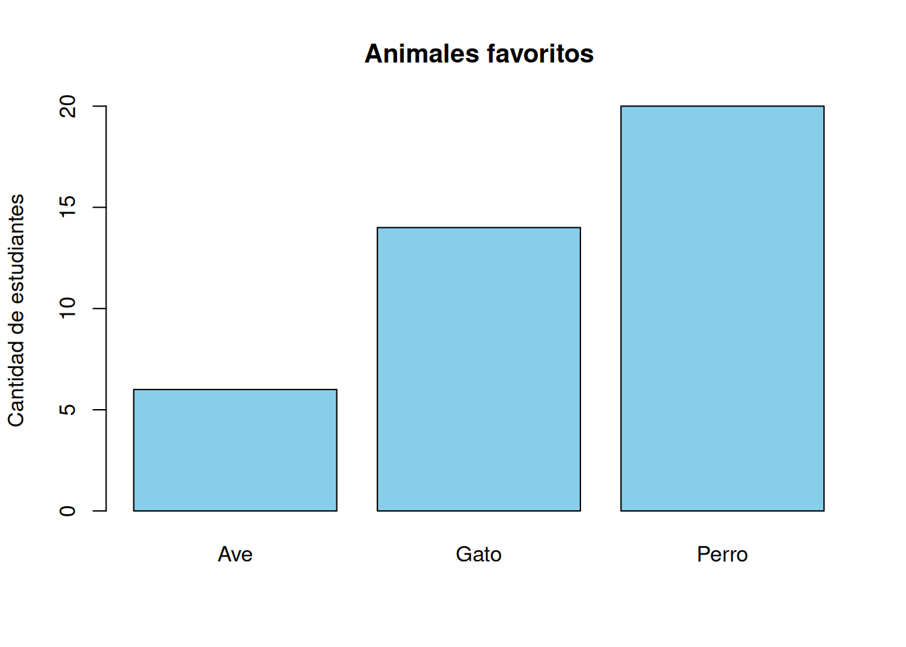
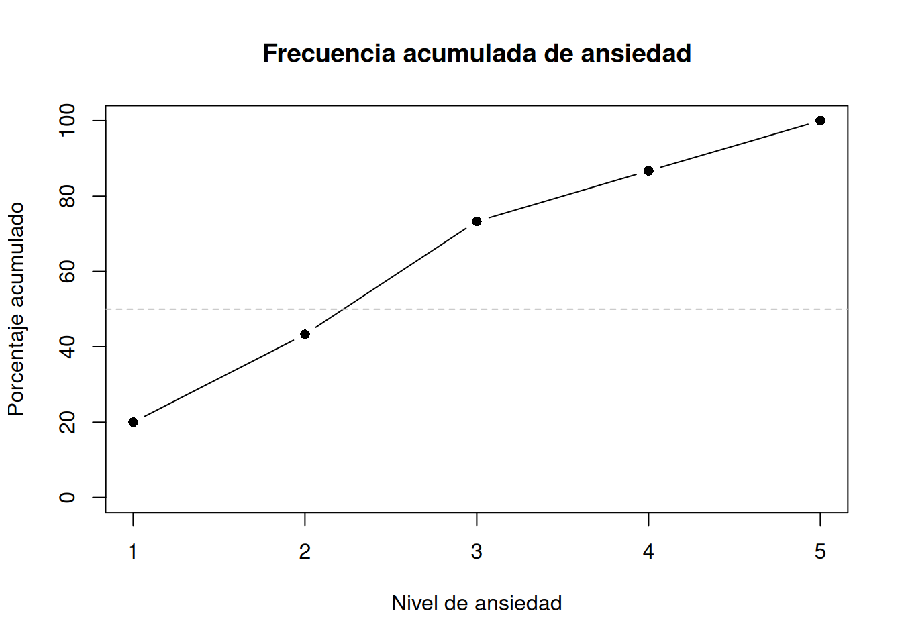
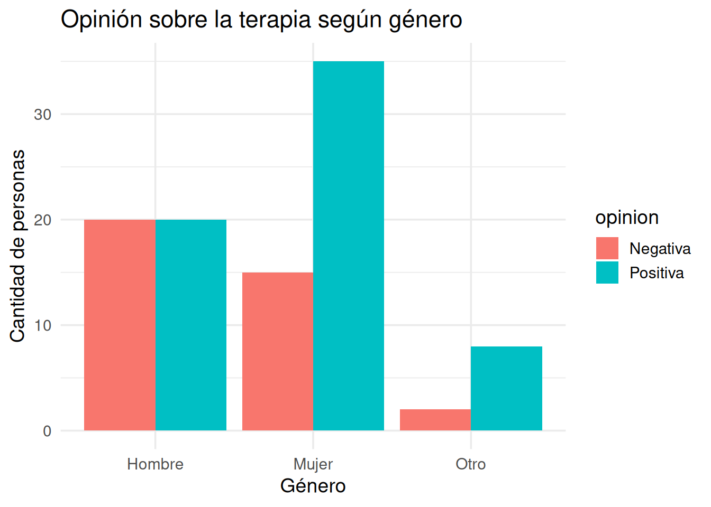
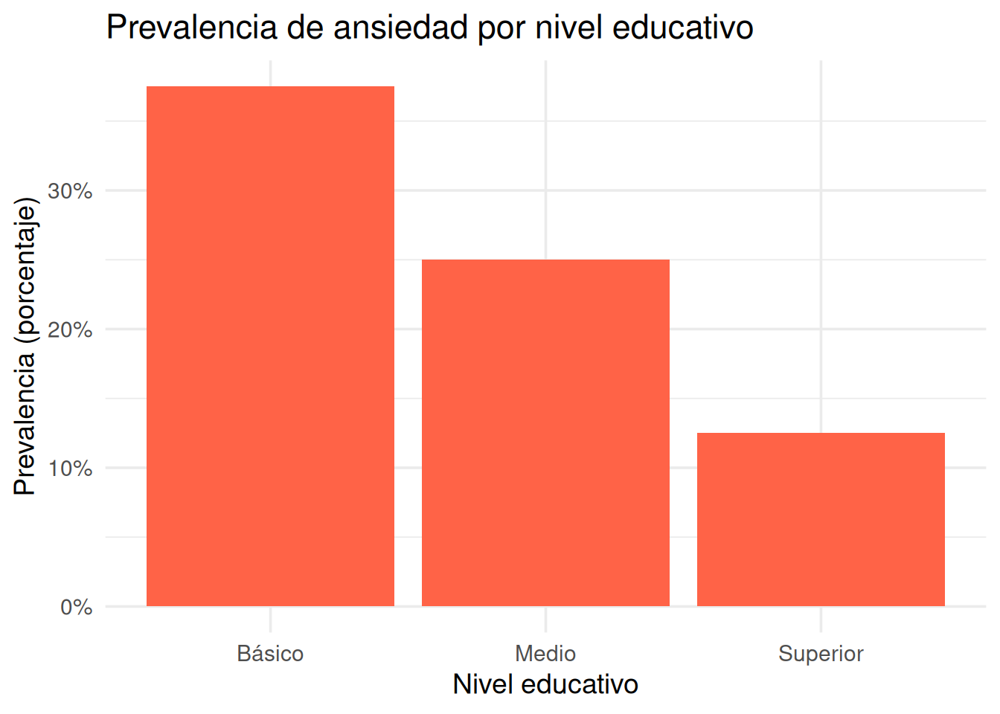
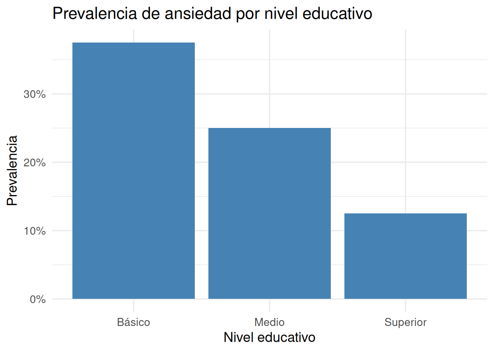
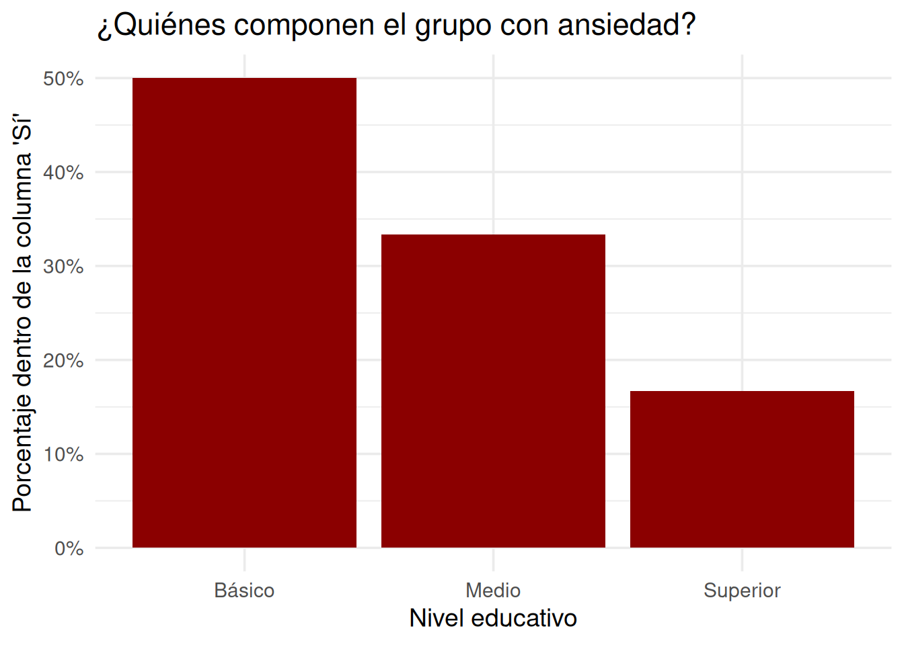
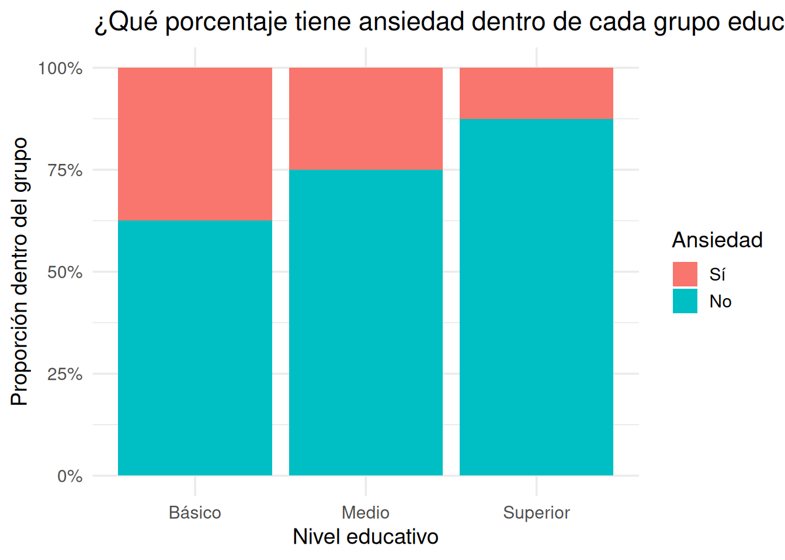
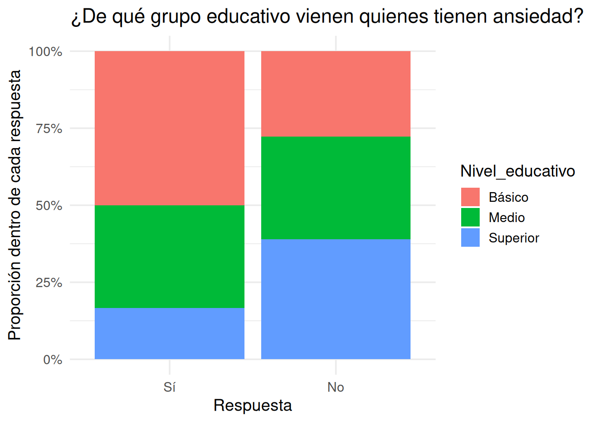

Álvaro Cabana y una inteligencia artificial generativa
Una de las primeras cosas que aprendemos cuando nos acercamos a la investigación —ya sea como estudiantes o como lectores críticos— es que muchas preguntas importantes no se responden con una única cifra, sino con una tabla. Y sin embargo, nadie nos enseña con suficiente detalle a leerlas bien.
Las tablas están por todos lados. En artículos, en informes, en presentaciones de resultados. Se usan para mostrar diagnósticos, comparar tratamientos, resumir encuestas, registrar elecciones, agrupar síntomas, clasificar pacientes. A veces parecen triviales: solo una cuadrícula con números. Pero un malentendido en cómo leerlas puede llevar a conclusiones completamente erradas. De hecho, muchas de las ideas más equivocadas sobre datos sociales surgen de leer mal una tabla.
En este capítulo vamos a detenernos en ese primer paso, fundamental pero a veces ignorado: leer una tabla categórica. No solo verla, sino entender:
qué representa cada número,
cómo se comparan las filas y las columnas,
qué tipo de proporción estamos leyendo (y cuál creemos que estamos leyendo),
y qué conclusiones podemos (o no podemos) sacar a partir de ella.
Y lo vamos a hacer paso a paso, desde lo más básico: contar.
Porque antes de correr modelos, hacer tests, o calcular valores p, hay algo más simple y más poderoso: mirar con atención qué dicen los datos, y cómo lo dicen.
Perfecto. Entonces seguimos con ese estilo narrativo y reflexivo, integrando ejemplos reales y bloques de código en R cuando sea útil. Ahora empiezo con la sección sobre frecuencias absolutas:
3.1 Contar: la primera estadística
Antes de hablar de porcentajes, probabilidades o inferencias, hay algo que hacemos todo el tiempo sin pensarlo mucho: contar. ¿Cuántas personas dijeron que sí? ¿Cuántos eligieron la opción A? ¿Cuántos pacientes presentaron síntomas?
Contar es tan básico que a veces no lo tratamos como una operación estadística. Pero lo es. De hecho, en datos categóricos, contar es hacer estadística descriptiva.
Cuando contamos, estamos calculando lo que se llama una frecuencia absoluta. Es simplemente eso: el número de veces que aparece una categoría.
3.1.1 Ejemplo: animales favoritos
Supongamos que en una clase de 40 estudiantes les pedimos que elijan su animal favorito entre tres opciones: gatos, perros y aves. Obtenemos las siguientes respuestas:
Esto nos da la tabla de frecuencias absolutas. Es lo más básico, pero ya nos permite ver cuál fue la opción más popular (en este caso, claramente Perro). Pero esa es solo una parte de la historia.
3.2 Ver lo que contamos
Los humanos somos visuales. Podemos leer la tabla de frecuencias, pero la vemos mucho mejor si la graficamos. Acá va el gráfico de barras correspondiente:
barplot(tabla_absoluta,main ="Animales favoritos",col ="skyblue",ylab ="Cantidad de estudiantes")

Frecuencias absolutas de animales favoritos
Esta es una tabla sencilla. Pero más adelante vamos a ver que a veces, incluso con una tabla simple, se pueden cometer errores de interpretación si no se tiene en cuenta el tipo de frecuencia o el contexto.
Por ahora, la gran idea es esta:
Contar categorías es el primer paso para entender los datos.
Todo lo que viene después —proporciones, porcentajes, pruebas estadísticas— se construye sobre ese primer conteo.
Perfecto. Seguimos avanzando en el capítulo, manteniendo el estilo narrativo y el uso de código en R. Pasamos ahora a frecuencias relativas y porcentuales.
3.3 ¿Qué tan grande es “mucho”?
Contar está bien. Pero a veces no alcanza. Saber que 22 personas eligieron “Perro” está bueno, pero… ¿22 sobre cuántas? ¿Es la mayoría? ¿Es más de la mitad? ¿Es mucho?
Ahí es donde entra la frecuencia relativa. Lo que antes era “cuántas personas eligieron esta opción” ahora se convierte en:
¿Qué proporción del total eligió esta opción?
Es una pregunta diferente. Y muchas veces, más útil.
3.3.1 Del número al total
Volvamos a nuestro ejemplo. Ya teníamos la tabla de frecuencias absolutas. Ahora vamos a calcular la proporción que representa cada categoría respecto al total de respuestas:
La tabla y el gráfico muestran lo mismo, pero de otra forma. A veces te conviene contar. A veces, comparar proporciones. Y lo importante es saber cuál estás usando.
Porque, como veremos más adelante, muchos errores de interpretación vienen de confundir una tabla con números crudos con otra que muestra proporciones.
3.4 Sumar hacia arriba: la frecuencia acumulada
Hasta ahora hablamos de categorías como si fueran simplemente distintas entre sí. Perros, gatos, aves. Ninguna tiene un “más” o un “menos”, ninguna está antes o después que otra. Solo son distintas. Pero no todas las categorías son así.
A veces, las categorías tienen orden.
Pensá en escalas de respuesta como estas:
“Nada”, “Poco”, “Algo”, “Mucho”
“Nunca”, “A veces”, “Frecuentemente”, “Siempre”
“Totalmente en desacuerdo” a “Totalmente de acuerdo”
En estos casos, no estamos eligiendo simplemente una etiqueta. Estamos ubicándonos en una serie ordenada de niveles. Esa estructura permite hacer algo que antes no podíamos: acumular.
3.4.1 ¿Para qué sirve acumular?
Imaginá que estás estudiando el nivel de ansiedad en una población, con una escala ordinal del 1 al 5, donde 1 es “muy baja ansiedad” y 5 es “muy alta ansiedad”.
Tenés los siguientes resultados de una encuesta a 30 personas:
Por ejemplo, podemos ver que el 63% de las personas tiene una puntuación de ansiedad 3 o menos. Esa información no la da ninguna frecuencia aislada, y es clave si querés responder preguntas como:
¿Qué proporción de la población está en el rango “bajo” o “moderado”?
Las frecuencias acumuladas nos ayudan a identificar umbrales, cortes y agrupamientos en escalas ordinales. Son especialmente útiles en psicología, donde se usan constantemente escalas de Likert, niveles de severidad, o clasificaciones de síntomas.
3.4.4 Ver la acumulación
Podemos representar la acumulación como una línea creciente, que muestra cómo se van sumando los porcentajes.
plot(acumulada_porcentual, type ="b", pch =16,xlab ="Nivel de ansiedad", ylab ="Porcentaje acumulado",main ="Frecuencia acumulada de ansiedad",ylim =c(0, 100))abline(h =50, col ="gray", lty =2)

Frecuencia acumulada de ansiedad (escala 1–5)
La línea gris horizontal marca el 50%. Donde la curva lo cruza, está la mediana categórica: el punto donde la mitad de las personas están por debajo.
Contar es solo el principio. Pero cuando hay orden, sumar nos cuenta una historia diferente. Una historia de acumulación, de corte, de “hasta aquí” y “a partir de acá”. Y eso, en psicología, es a veces la diferencia entre un caso leve y uno severo.
Perfecto. Voy a continuar con la sección sobre tablas de contingencia, cuidando que el tono se mantenga narrativo, reflexivo y accesible, con ejemplos claros y progresivos. Acá vamos.
3.5 Dos variables, una tabla: cuando las categorías se cruzan
Hasta ahora veníamos mirando una sola variable a la vez. Contábamos cuántas personas eligieron esta opción o aquella. Calculábamos qué porcentaje respondió de cierta manera. Veíamos cómo se acumulaban los niveles de una escala.
Pero la mayoría de las preguntas interesantes en psicología —y en ciencias sociales en general— no se responden mirando una sola variable. Nos interesa saber cómo se relacionan entre sí.
¿Tienen más actitudes negativas hacia la terapia los varones que las mujeres?
¿Se diagnostica más ansiedad en quienes tienen trabajos precarios?
¿Hay más rechazo a la eutanasia entre personas con menor nivel educativo?
Todas estas preguntas implican dos variables categóricas. Y cuando eso pasa, aparece un recurso fundamental: la tabla de contingencia.
3.5.1 ¿Qué es una tabla de contingencia?
Es simplemente una forma ordenada de mostrar cuántas personas (o casos) caen simultáneamente en cada combinación de categorías de dos variables.
Por ejemplo, si tenemos información sobre el género de una persona (hombre, mujer, otro) y su opinión sobre la eficacia de la psicoterapia (positiva o negativa), podemos construir una tabla que muestre cómo se distribuyen esas respuestas:
opinion
genero Negativa Positiva
Hombre 20 20
Mujer 15 35
Otro 2 8
Esta tabla nos muestra frecuencias absolutas conjuntas. Es decir, cuántas personas hay en cada cruce de categorías: cuántas mujeres con opinión positiva, cuántos hombres con opinión negativa, etc.
3.5.2 ¿Qué se puede leer de esta tabla?
A simple vista, parece que:
Hay más mujeres con opinión positiva que negativa.
Entre los hombres, la distribución es más pareja.
El grupo “Otro” también tiende a opinar más positivamente.
Pero, como veremos más adelante, mirar sólo los números absolutos puede ser engañoso.
Por ahora, quedémonos con la idea de que la tabla de contingencia resume cómo se distribuyen dos variables categóricas, y que es la puerta de entrada a casi todo lo que vamos a querer analizar después: proporciones condicionales, relaciones, independencias, efectos.
Y, por supuesto, la vamos a querer ver también como gráfico.
3.5.3 Visualizar la tabla
Podemos convertir esa tabla en un gráfico de barras apiladas o agrupadas. Por ejemplo:
library(ggplot2)datos <-data.frame(genero, opinion)ggplot(datos, aes(x = genero, fill = opinion)) +geom_bar(position ="dodge") +labs(title ="Opinión sobre la terapia según género",x ="Género", y ="Cantidad de personas") +theme_minimal(base_size =14)

Distribución conjunta de opinión sobre terapia según género
Este gráfico nos permite ver en paralelo las frecuencias de cada categoría, lo que a veces es más fácil que comparar números en una cuadrícula. Pero —y esto es clave— este gráfico está mostrando los valores absolutos, no proporciones. Y ahí es donde pueden empezar los malentendidos.
Perfecto. Esta sección es clave porque muchos errores de interpretación se originan aquí. Vamos a desarrollar con cuidado y ejemplos cómo los totales estructuran la lectura, y cómo se pueden malinterpretar relaciones si no se considera esto. Aquí va.
3.6 Los totales mandan: leer bien una tabla (y no cometer errores)
Cuando uno mira una tabla de contingencia, lo primero que suele hacer es comparar los números. Cuántos hay en una celda, cuántos en otra. Y a veces esa comparación es útil. Pero otras veces puede ser totalmente engañosa.
El problema está en no tener en cuenta de qué total estamos hablando.
3.6.1 Tres tipos de totales, tres formas de leer
Una tabla de contingencia puede organizarse (y leerse) de distintas maneras según qué total se está usando como referencia.
Veamos los tres casos principales:
3.6.2 🧱 1. Totales por fila
Esto pasa cuando preguntamos:
“Dado que la persona es mujer, ¿qué opinó sobre la terapia?”
Es decir: ya sabemos a qué grupo pertenece (la fila), y queremos ver cómo se distribuyen sus respuestas (las columnas). En este caso, las proporciones se calculan por fila.
opinion
genero Negativa Positiva
Hombre 0.5 0.5
Mujer 0.3 0.7
Otro 0.2 0.8
Esto responde preguntas del tipo:
¿Qué porcentaje de mujeres tuvo opinión positiva?
¿Qué porcentaje de hombres fue negativo?
Estas proporciones son condicionales a la fila. Y se usan todo el tiempo en psicología, especialmente cuando hay grupos naturales (género, diagnóstico, condición experimental).
3.6.3 🧱 2. Totales por columna
Ahora cambiamos la pregunta:
“Dado que la persona tuvo opinión positiva, ¿de qué grupo fue?”
Es decir: ya sabemos la respuesta (la columna), y queremos ver su distribución por grupo (la fila). Calculamos proporciones por columna.
opinion
genero Negativa Positiva
Hombre 0.20 0.20
Mujer 0.15 0.35
Otro 0.02 0.08
Esto responde:
¿Qué fracción de la muestra son mujeres con opinión positiva?
¿Qué porcentaje total del estudio representa cada celda?
Es útil para estimar prevalencias conjuntas. Pero no sirve para comparar respuestas dentro de grupos.
3.7 ⚠️ ¿Por qué importa esto?
Porque si no sabemos qué total estamos usando, podemos decir cosas como:
“La mayoría de los que están en contra de la terapia son hombres”.
Cuando en realidad hay más hombres en contra simplemente porque hay más hombres en total.
O peor:
“Los hombres son más negativos hacia la terapia”.
Cuando al calcular los porcentajes dentro de cada grupo, tal vez descubrimos que en realidad hay más negatividad proporcional entre las mujeres.
Estos errores son muy comunes en artículos, medios, e incluso investigaciones. Y se derivan de no distinguir claramente la estructura del total.
🧠 Regla de oro Nunca interpretes una tabla de contingencia sin saber primero de qué total estás hablando.
Perfecto. Ahora seguimos con una sección dedicada a las tablas de prevalencia, un tipo muy común y muy útil de tabla en psicología y epidemiología, pero que también puede inducir a errores si no se interpreta bien. La idea es seguir desarrollando la intuición del lector y mostrarle cómo identificar este tipo especial de tabla.
3.8 Tablas de prevalencia: ver cuánto hay de algo, dentro de algo
En psicología clínica, epidemiología y salud mental, una de las preguntas más frecuentes que nos hacemos es:
“¿Cuánta gente presenta esta condición en este grupo?”
Por ejemplo:
¿Qué porcentaje de adolescentes varones tiene síntomas de depresión?
¿Cuál es la proporción de pacientes con ansiedad en personas desempleadas?
¿Cuántas personas con bajo nivel educativo han intentado suicidarse?
Este tipo de preguntas no apunta a una comparación entre grupos, ni a una inferencia estadística (todavía). Lo que busca es saber cuánto hay de una característica (un diagnóstico, un síntoma, una conducta) dentro de una población determinada.
Esa pregunta tiene nombre: se llama prevalencia.
3.8.1 ¿Qué es la prevalencia?
Es la proporción de personas que presentan una característica determinada dentro de un grupo dado, en un momento específico.
Prevalencia = casos positivos / total del grupo
Es una proporción condicional. Es decir, está condicionada al grupo de referencia.
3.8.2 Ejemplo: prevalencia de ansiedad por nivel educativo
Supongamos que se encuestó a 120 personas, divididas en tres niveles educativos: básico, medio y superior. Se les preguntó si habían experimentado ansiedad clínica el último mes. Obtenemos la siguiente tabla:
ansiedad
educacion No Sí
Básico 25 15
Medio 30 10
Superior 35 5
3.8.3 ¿Cómo se calcula la prevalencia?
Queremos saber qué proporción de personas de cada nivel educativo reportó ansiedad. Para eso, normalizamos por fila: calculamos proporciones dentro de cada grupo.
ansiedad
educacion No Sí
Básico 0.62 0.38
Medio 0.75 0.25
Superior 0.88 0.12
Ahora vemos que:
En el grupo de educación básica, el 37.5% reportó ansiedad.
En el grupo medio, el 25%.
En el grupo superior, solo el 12.5%.
Estas proporciones son las prevalencias de ansiedad en cada grupo.
3.8.4 Visualizar una tabla de prevalencia
Un gráfico de barras permite ver esto claramente:
library(tidyverse)
── Attaching core tidyverse packages ──────────────────────── tidyverse 2.0.0 ──
✔ dplyr 1.1.4 ✔ readr 2.1.5
✔ forcats 1.0.0 ✔ stringr 1.5.1
✔ lubridate 1.9.3 ✔ tibble 3.2.1
✔ purrr 1.0.2 ✔ tidyr 1.3.1
── Conflicts ────────────────────────────────────────── tidyverse_conflicts() ──
✖ dplyr::filter() masks stats::filter()
✖ dplyr::lag() masks stats::lag()
ℹ Use the conflicted package (<http://conflicted.r-lib.org/>) to force all conflicts to become errors
datos_prev <-as.data.frame(tabla_ansiedad) |>group_by(educacion) |>mutate(Prevalencia = Freq /sum(Freq)) |>filter(ansiedad =="Sí")ggplot(datos_prev, aes(x = educacion, y = Prevalencia)) +geom_col(fill ="tomato") +scale_y_continuous(labels = scales::percent) +labs(title ="Prevalencia de ansiedad por nivel educativo",x ="Nivel educativo",y ="Prevalencia (porcentaje)") +theme_minimal(base_size =14)

Prevalencia de ansiedad por nivel educativo
3.8.5 ¿Cómo sé si estoy viendo una tabla de prevalencia?
Muy fácil. Preguntate:
¿Estoy viendo qué porcentaje de cada grupo presenta cierta condición?
¿Las proporciones están calculadas por fila?
Si la respuesta es sí, estás frente a una tabla de prevalencia.
Y ahora viene lo más importante:
Nunca confundas una tabla de prevalencia con una tabla de distribución general.
Porque si alguien te dice:
“La mayoría de las personas con ansiedad tienen educación básica”, eso podría ser cierto simplemente porque hay más personas con ese nivel educativo.
Pero eso no significa que ese grupo tenga mayor prevalencia. Por eso, es clave identificar el tipo de tabla que estás mirando. Y saber desde qué total están calculadas las proporciones.
Excelente. Esta sección va a mostrar con claridad cómo dos tablas con los mismos números absolutos pueden generar interpretaciones muy distintas, dependiendo de cómo se estructuren las proporciones. Es un momento ideal para profundizar en la lectura crítica y el concepto de condicionalidad.
3.9 Dos historias, una tabla: cómo el mismo dato puede decir cosas distintas
Supongamos que tenés la siguiente tabla. Es simple, clara, y 100% realista. En algún momento de tu formación (o carrera), vas a encontrarte con algo parecido:
Ansiedad
Nivel_educativo Sí No
Básico 15 25
Medio 10 30
Superior 5 35
Esta tabla muestra cuántas personas de cada nivel educativo reportaron ansiedad clínica (“Sí”) o no (“No”). A simple vista, podrías pensar que el grupo de educación básica tiene más casos de ansiedad que el de nivel medio o superior. Pero, ¿eso significa que la ansiedad es más prevalente en ese grupo?
Depende. De cómo leas la tabla.
3.9.1 🧭 Historia 1: la tabla de prevalencia
Vamos a calcular proporciones por fila, es decir, respecto al total de personas dentro de cada grupo educativo:
Ansiedad
Nivel_educativo Sí No
Básico 0.50 0.28
Medio 0.33 0.33
Superior 0.17 0.39
Y ahora vemos otra historia:
De todas las personas con ansiedad (“Sí”), el 50% tiene educación básica
El 33% tiene educación media
El 17% tiene educación superior
Historia 2: la mayoría de las personas con ansiedad tienen bajo nivel educativo.
Esta es una tabla de distribución condicional inversa: qué tipo de personas hay entre los que dijeron “sí”.
3.9.3 🧠 ¿Cuál está “bien”?
Las dos son válidas. Y las dos cuentan cosas distintas.
La tabla de prevalencia (por fila) te dice cómo afecta una condición a un grupo.
La tabla por columna te dice quiénes componen una categoría de respuesta.
El problema no está en cuál tabla usás, sino en creer que una te está diciendo lo que en realidad dice la otra.
3.9.4 Visualizar ambas historias
3.9.4.1 Historia 1: prevalencia
df_fila <-as.data.frame(prop_fila)ggplot(df_fila[df_fila$Ansiedad =="Sí", ], aes(x = Nivel_educativo, y = Freq)) +geom_col(fill ="steelblue") +scale_y_continuous(labels = scales::percent) +labs(title ="Prevalencia de ansiedad por nivel educativo",x ="Nivel educativo", y ="Prevalencia") +theme_minimal(base_size =14)

Prevalencia de ansiedad por nivel educativo (proporciones por fila)
3.9.4.2 Historia 2: composición del grupo ansioso
df_col <-as.data.frame(prop_col)ggplot(df_col[df_col$Ansiedad =="Sí", ], aes(x = Nivel_educativo, y = Freq)) +geom_col(fill ="darkred") +scale_y_continuous(labels = scales::percent) +labs(title ="¿Quiénes componen el grupo con ansiedad?",x ="Nivel educativo", y ="Porcentaje dentro de la columna 'Sí'") +theme_minimal(base_size =14)

Distribución del nivel educativo entre quienes reportaron ansiedad (proporciones por columna)
3.10 Lo que ves depende de cómo mirás
Este es uno de los momentos clave del capítulo. La misma tabla puede sostener dos narrativas distintas, ambas basadas en números reales, pero con énfasis diferente. Y si no sabés cuál estás leyendo, podés llegar a conclusiones opuestas sin darte cuenta.
3.11 ¿Qué porcentaje de qué? Pensar en condicionales
Las proporciones no son neutrales. Siempre están condicionadas a algo. Decir que “el 30% de las personas tienen ansiedad” no es lo mismo que decir “el 30% de las personas con ansiedad son estudiantes”.
A simple vista, ambas frases parecen similares. Pero están diciendo cosas completamente distintas.
Esta distinción no es un detalle técnico. Es una herramienta fundamental para pensar correctamente en datos categóricos. Y es una de las fuentes más comunes de confusión en psicología, salud y ciencias sociales.
3.11.1 Dos preguntas, dos tablas
Volvamos al ejemplo anterior con ansiedad y nivel educativo. Recordá que teníamos la siguiente tabla:
tabla
Ansiedad
Nivel_educativo Sí No
Básico 15 25
Medio 10 30
Superior 5 35
A partir de esta tabla, podés hacer dos preguntas:
P1. Entre las personas de nivel educativo básico, ¿qué proporción tiene ansiedad?
P2. Entre las personas con ansiedad, ¿qué proporción tiene nivel educativo básico?
Las dos preguntas son válidas. Pero están invirtiendo la condicionalidad.
3.11.2 Proporciones por fila (P1)
prop_fila
Ansiedad
Nivel_educativo Sí No
Básico 0.375 0.625
Medio 0.250 0.750
Superior 0.125 0.875
Esta tabla responde a la primera pregunta: ¿qué porcentaje de cada grupo educativo tiene ansiedad?
Es decir: “Dado el grupo, ¿cuál es la respuesta?”
3.11.3 Proporciones por columna (P2)
prop_col
Ansiedad
Nivel_educativo Sí No
Básico 0.5000000 0.2777778
Medio 0.3333333 0.3333333
Superior 0.1666667 0.3888889
Esta tabla responde a la segunda pregunta: ¿qué porcentaje de las personas con ansiedad pertenece a cada grupo educativo?
Es decir: “Dada la respuesta, ¿de dónde viene?”
3.11.4 No confundas estas dos
Esto puede parecer obvio en teoría, pero en la práctica se confunde todo el tiempo. Y las consecuencias son reales. Por ejemplo:
Podés tener una condición que afecta proporcionalmente más a un grupo (mayor prevalencia)… …pero que está compuesta en su mayoría por otro grupo (mayor peso absoluto).
Podés pensar que hay una “relación fuerte” entre dos variables, solo porque no estás viendo desde qué total se calculó cada proporción.
3.11.5 ¿Cómo saber cuál estás viendo?
Buena práctica: mirá cómo están normalizadas las proporciones. Si cada fila suma 1 (o 100%), entonces estás viendo proporciones condicionales al grupo. Si cada columna suma 1, entonces estás viendo proporciones condicionales a la respuesta.
Visualmente, podés graficarlo así:
3.11.5.1 ¿Qué porcentaje tiene ansiedad dentro de cada grupo?
df_f <-as.data.frame(prop_fila)ggplot(df_f, aes(x = Nivel_educativo, y = Freq, fill = Ansiedad)) +geom_col(position ="fill") +scale_y_continuous(labels = scales::percent) +labs(title ="¿Qué porcentaje tiene ansiedad dentro de cada grupo educativo?",y ="Proporción dentro del grupo", x ="Nivel educativo") +theme_minimal(base_size =14)

Proporciones condicionales por grupo educativo (fila)
3.11.5.2 ¿De qué grupo vienen quienes tienen ansiedad?
df_c <-as.data.frame(prop_col)ggplot(df_c, aes(x = Ansiedad, y = Freq, fill = Nivel_educativo)) +geom_col(position ="fill") +scale_y_continuous(labels = scales::percent) +labs(title ="¿De qué grupo educativo vienen quienes tienen ansiedad?",y ="Proporción dentro de cada respuesta", x ="Respuesta") +theme_minimal(base_size =14)

Proporciones condicionales dentro del grupo que reportó ansiedad (columna)
3.11.6 Entender condicionales ≠ solo leer bien
Entender bien las proporciones condicionales no solo evita errores. También te entrena para algo más grande: pensar en términos de relaciones causales, probabilísticas y contextuales. Algo que vas a necesitar en casi todo lo que viene después.
Perfecto, vamos con la sección sobre incidencia, diferenciándola cuidadosamente de la prevalencia, usando un tono narrativo y orientado a ejemplos en psicología, como siempre.
3.12 Incidencia: cuando contar también implica tiempo
Hasta ahora veníamos preguntándonos cuántas personas tienen algo. Pero en muchos casos, la pregunta más importante no es quién tiene, sino quién empezó a tener.
Esa diferencia —sutil pero crucial— nos lleva a un nuevo concepto: la incidencia.
3.12.1 ¿Qué es la incidencia?
La incidencia es la proporción de nuevos casos de una condición que aparecen en una población durante un período determinado de tiempo.
Si la prevalencia te dice cuántas personas tienen ansiedad ahora, la incidencia te dice cuántas personas desarrollaron ansiedad desde la última vez que mediste.
3.12.2 ¿Por qué importa?
Porque no es lo mismo que muchas personas tengan algo, a que muchas personas empiecen a tenerlo.
Un trastorno puede tener:
Alta prevalencia y baja incidencia: por ejemplo, una condición crónica que pocas personas desarrollan, pero que dura mucho tiempo (como la esquizofrenia).
Baja prevalencia y alta incidencia: por ejemplo, una reacción aguda y breve que mucha gente experimenta pero que se resuelve rápido (como ataques de pánico en situaciones específicas).
Y eso cambia radicalmente lo que entendemos del fenómeno.
3.12.3 Ejemplo: ansiedad en estudiantes al empezar el semestre
Supongamos que medimos ansiedad clínica en una muestra de estudiantes al comienzo y al final del primer mes del semestre. De los 100 estudiantes:
10 ya tenían ansiedad cuando comenzó el semestre → prevalencia al inicio.
15 desarrollaron ansiedad durante el primer mes → incidencia en el primer mes.
Esto nos dice que hubo 15 nuevos casos, y que la incidencia mensual fue del 15%.
3.12.4 Diferencias en visualización
Para mostrar estas diferencias, necesitamos saber cuándo se midió cada cosa.
Esto muestra cuántas personas desarrollaron ansiedad (de “No” a “Sí”) durante el mes.
3.12.5 Calcular la incidencia
# Casos que pasaron de No a Sícasos_nuevos <- tabla_cambios["No", "Sí"]# Total de personas que no tenían ansiedad al iniciopoblacion_riesgo <-sum(tabla_cambios["No", ])incidencia <- casos_nuevos / poblacion_riesgoround(incidencia, 2)
[1] 0.17
Resultado: 15 de 90 personas sin ansiedad al inicio desarrollaron ansiedad en el primer mes. La incidencia fue del 17%.
3.12.6 Comparar no es mezclar
Una tabla puede mostrarte:
la prevalencia actual, si te dice “cuántos tienen ansiedad ahora”;
o la incidencia, si te muestra “cuántos nuevos casos hubo entre los que no tenían”.
Si no sabés cuál es cuál, podés malinterpretar el fenómeno. Por ejemplo, podés pensar que un tratamiento fue efectivo porque bajó la prevalencia, sin darte cuenta de que la incidencia sigue siendo alta.
3.13 Lo que cuentan las tablas… y lo que no
A lo largo de este capítulo recorrimos un camino que parece sencillo: contar cosas. Pero con cada paso, ese conteo se volvió más rico, más preciso… y también más propenso a malinterpretaciones.
Aprendimos que no todas las frecuencias son iguales. Que contar puede significar:
simplemente saber cuántos casos hay (frecuencia absoluta),
o qué proporción representan (frecuencia relativa y porcentual),
o incluso, en casos con orden, cuántos están por debajo de cierto umbral (frecuencia acumulada).
Vimos que cuando dos variables se cruzan, todo se vuelve más interesante —y más confuso. Que no basta con ver los números: hay que saber desde qué total se están leyendo.
Nos enfrentamos a la diferencia entre prevalencia e incidencia, entre contar lo que hay y contar lo que empieza a haber. Entre saber cuántos y saber cuándo.
Y, sobre todo, aprendimos algo fundamental:
Los números en una tabla no hablan por sí solos. Necesitan contexto. Dirección. Una lectura cuidadosa.
3.14 ¿Y si lo que vemos es solo azar?
Al final de este recorrido, aparece una nueva inquietud. Una que viene acechando desde el principio, aunque no la hayamos dicho en voz alta:
¿Y si las diferencias que veo en esta tabla se deben simplemente al azar?
Cuando ves que un grupo tiene más casos que otro… Cuando una categoría aparece con más frecuencia… Cuando una proporción parece desbalanceada…
… ¿cómo sabés que eso no es simplemente un efecto de la muestra? ¿De cómo justo se dieron los datos?
Ahí es donde empieza la inferencia estadística.
No porque los datos no alcancen, sino porque queremos ir más allá. No para complicarnos, sino para poder decir con mayor confianza:
“esto que vemos no es casualidad”.
Y eso, precisamente, es lo que vamos a empezar a explorar en el próximo capítulo.
Pero antes de probar nada, hay que saber cómo se mide una diferencia. Y para eso, necesitamos dar otro paso.